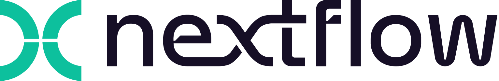

Workflow managers allow you to develop an automated pipeline from your scripts that can then be run on a variety of systems.
The manager then coordinates the deployment of the scripts in the appropriate sequence, monitors the jobs, handles the file transfers between scripts, gathers the output, and handles re-execution of failed jobs for you. Workflow managed pipelines can run containers, which eliminates software installation and version conflicts.
There are two main workflow managers: snakemake and nextflow.
Nextflow
In nextflow, your scripts are turned into processes, connected by channels that contain the data - input, output etc. The order of the processes, and their interaction with each other, is specfied in the workflow scope.

Important things about nextflow: - The script can be written in any language. - The modularity of the process allows to re-use existing scripts and processes easily. - The functional processes are separated from the executive ones, therefore the pipelines are higly interoperable and portable. - Pipelines can be very reproducible if they are integrated with version control tools (like git or bitbucket) and container technologies (apptainer or docker). - They are scalable, you can start testing with just a couple of samples and easily scale up to hundreds or thusands. Processes are run in parallele automatically when possible. - It resumes executions. Automatically checks the processes and can resume from a point of failure without having to re-compute already completed parts. - It’s open source.
** Processes and Channels**
The Netxflow workflows are made by combining different processes. This processes can be written in different lenguages as long as they can be executed by a Linux platform. Each process is executed independently, and different processes only comunicate via a first-in, first-out asynchronous queue. These queues are called channels, and any process can defined them as input and output. The interaction between these processes and the execution of the workflow is defined by these input output declarations.
This is how a basic Nextflow pipeline process block would look like:
process PROCESS_NAME{
input:
data z
data y
data x
// directives
container
script:
task1
task2
task3
output:
output x
output y
output z
}Execution abstraction running fastQC
In Nextflow, the process defines what comand or script is executed, and the executor determines how that script is runned. By default, the processes are excuted on the local computer. The local executor is very useful in workflow development and testing, but when running real computational workflows other platforms are required, like a high-performance computing or cloud platform.
srun -A project_ID -t 15:00 -n 1 fastqc --noextract -o fastqc data data/sample_1.fastq.gz data/sample_2.fastq.gz Nextflow code example
Script:
#!/usr/bin/env nextflow
params.greeting = 'Hello world!'
greeting_ch = Channel.of(params.greeting)
process SPLITLETTERS {
input:
val x
output:
path 'chunk_*'
script:
"""
printf '$x' | split -b 6 - chunk_
"""
}
process CONVERTTOUPPER {
input:
path y
output:
stdout
script:
"""
cat $y | tr '[a-z]' '[A-Z]'
"""
}
workflow {
letters_ch = SPLITLETTERS(greeting_ch)
results_ch = CONVERTTOUPPER(letters_ch.flatten())
results_ch.view{ it }
}To run it:
pixi run nextflow run hello.nfThe output:
N E X T F L O W ~ version 25.04.7
Launching `hello.nf` [jolly_faraday] DSL2 - revision: f5e335f983
executor > local (3)
[96/fd5f07] SPLITLETTERS (1) [100%] 1 of 1 ✔
[7e/dad424] CONVERTTOUPPER (2) [100%] 2 of 2 ✔
HELLO
WORLD!Modify and resume
Nextflow keeps track of all the processes executed and if you modify some prts of your script, only the processes that are changed will be re-executed. In this case, it will use the cached result from the processes that weren’t changed.
Workflow parameters
The workflow parameters are simply declared by prepending the prefix params to a variable name, separated by a ‘.’ (e.g. params.greetings). Their value can be specified on the comand line:
pixi run nextflow run hello.nf -resume --greeting 'Bonjour le monde!'Clean up Nextflow
Periodically, it makes sense to clean up your nextflow working directory. You can do that manually, but the non-descriptive nature of the file system makes that difficult.
Nextflow keeps track of your runs that have been executed from the current directory. The folowing comand will show you the executions log and runtime information of all the runs.
pixi run nextflow logYou can clean the porject cache and th work directories with the folowing comand:
nextflow cleanYou can also specify the run or runs that you want to eliminate. Here you can find a more extensive explanation of the different options.